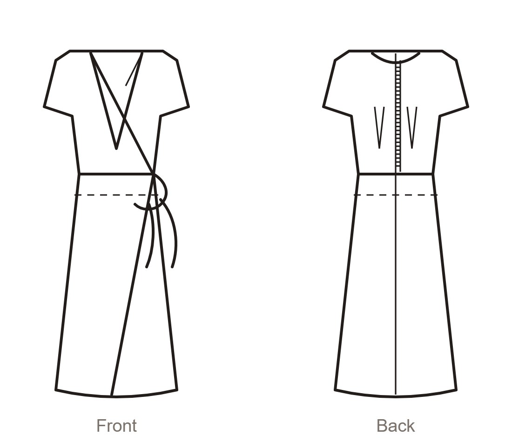
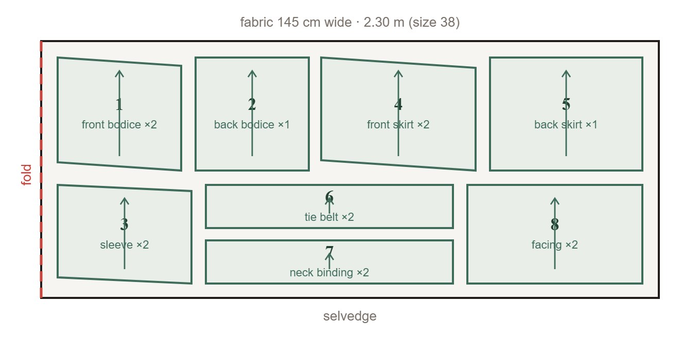

Sew Fictional · Issue 09 · 2026Pattern sheet A · green · pieces 1–8
{kind=link}

101
Juniper wrap dress
A true wrap dress with a crossover bodice, cap sleeves and a tie belt that passes through the waist seam. Knee length, with a softly overlapping skirt.
- Sizes
- 34–48
- Difficulty
- ●●○ intermediate · 3–4 hours
- Fabric
- Cotton poplin, viscose, crepe — 2.30 m of 145 cm wide fabric (size 38)
- Shown in
- Sage ditsy floral cotton poplin
- You will need
- Fusible interfacing 0.30 m · matching thread · 4 press studs 10 mm
- Seam allowance
- 1.5 cm on all seams, 2 cm at the hem — not included on the sheet
Technical drawing

Size chart (cm)
| Size | 34 | 36 | 38 | 40 | 42 | 44 | 46 | 48 |
|---|---|---|---|---|---|---|---|---|
| Bust | 80 | 84 | 88 | 92 | 96 | 100 | 104 | 112 |
| Waist | 62 | 66 | 70 | 74 | 78 | 82 | 86 | 94 |
| Hip | 86 | 90 | 94 | 98 | 102 | 106 | 110 | 118 |
| Fabric (m) | 2.1 | 2.1 | 2.3 | 2.3 | 2.4 | 2.5 | 2.6 | 2.8 |
Choosing your size. Go by your bust measurement; the wrap front takes care of the waist. Between two sizes, take the smaller one — the dress is cut generously.
Pattern pieces
- 1 front bodice — cut 2
- 2 back bodice — cut 1 on the fold
- 3 cap sleeve — cut 2
- 4 front skirt — cut 2
- 5 back skirt — cut 1 on the fold
- 6 tie belt — cut 2
- 7 neck binding — cut 2
- 8 front facing — cut 2
Before you cut. Trace the pieces from sheet A in the colour of your size and add the seam allowances. Pre-wash the fabric.
Cutting layout

Layout. Fold the fabric right sides together along the selvedge and pin the pieces with the grain arrows running parallel to the fold.
How to sew
Darts and shoulder seamsStitch the back darts and press them towards the centre. Join the fronts to the back at the shoulders and press the seams open.
Neck bindingFold binding 7 lengthwise, wrong sides together, and press. Stitch it to the neckline of both fronts, from the waist up and over the shoulder.
SleevesSet in the cap sleeves flat, before the side seams. Ease the sleeve head with two rows of long stitches.
Side seamsClose the side seams in one go, from sleeve hem to waist. Leave a 2 cm opening at the right waist for the tie to pass through.
SkirtJoin the front skirt panels to the back at the sides. Gather the waist edge to fit the bodice and stitch the skirt to the bodice.
Wrap edges and hemPress the facings to the inside along the wrap edges and topstitch 1 cm from the edge. Hem the skirt by 2 cm.
Tie beltStitch the belt pieces right sides together, turn out and press. Pass the left tie through the waist opening and knot at the right side.
Sew Fictional is a fictional magazine made for Lostria Sewing app demos.Page 38